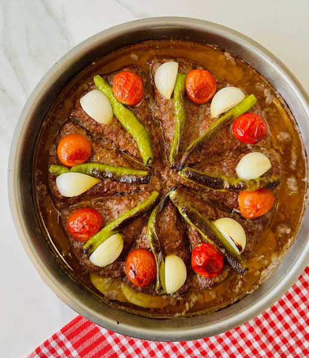
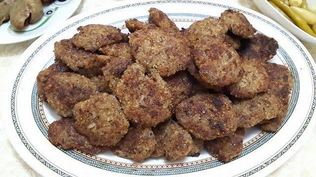
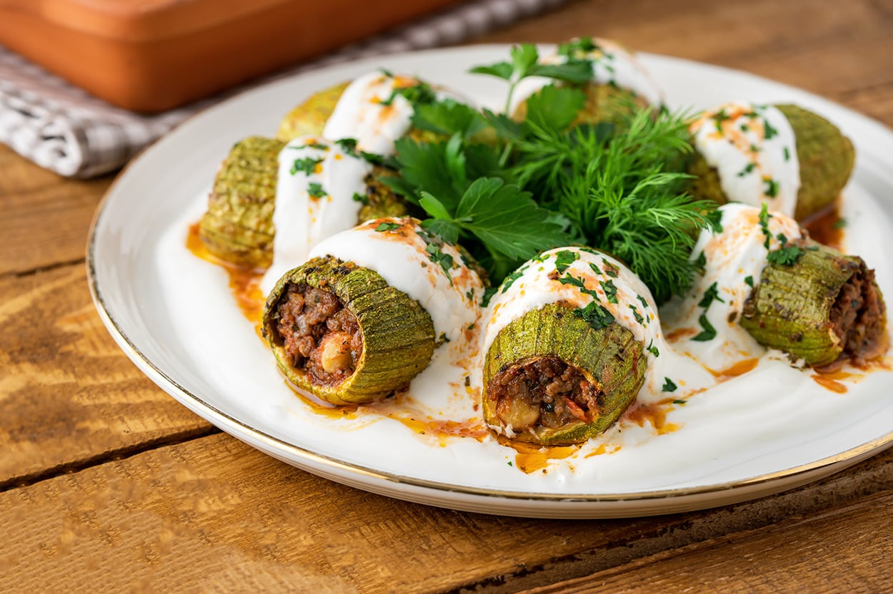
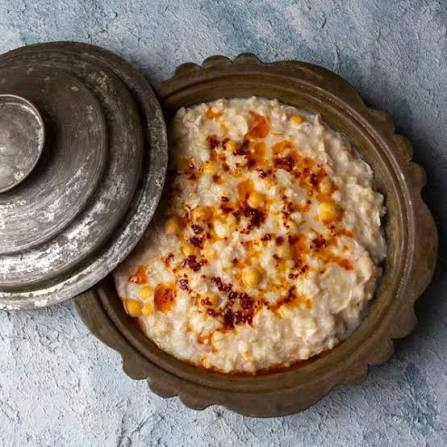
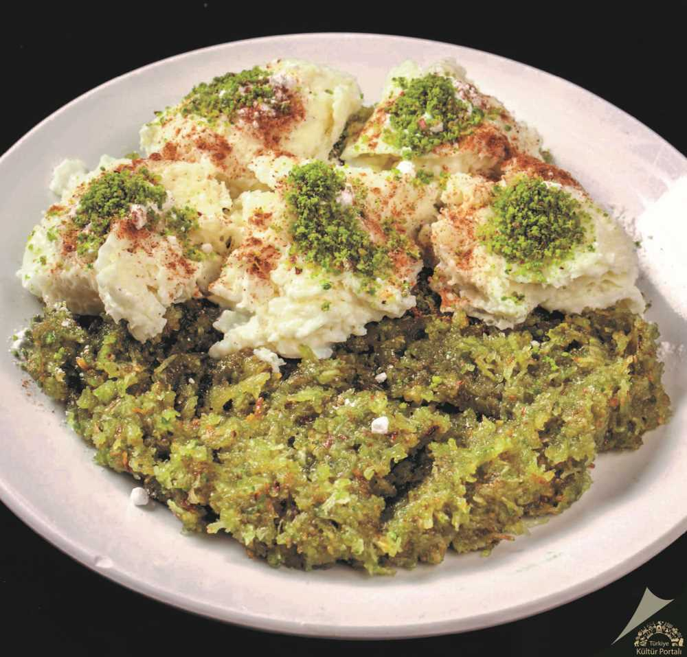
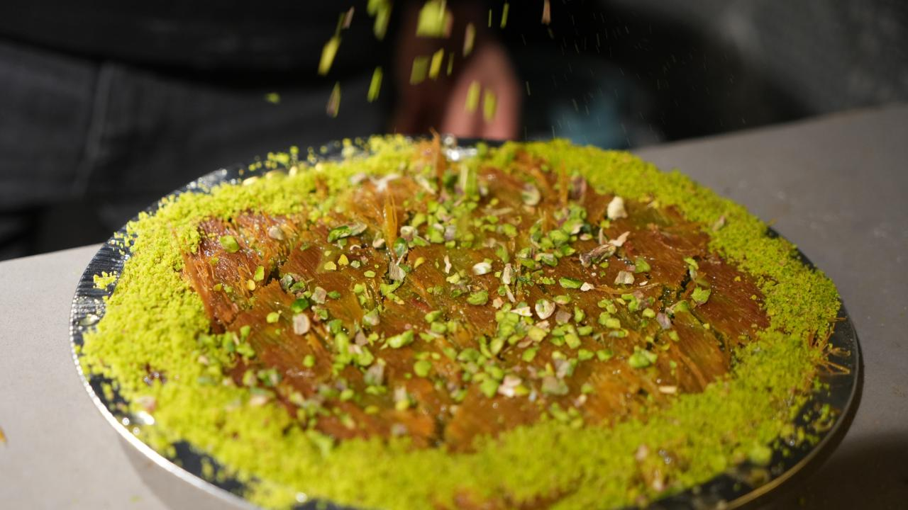
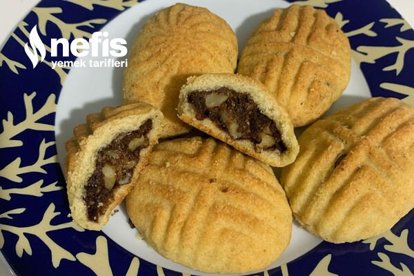

Bir Şehrin Sofraya Yansıyan Kültürü
Kilis mutfağı; Türk mutfağının özelliklerini taşırken Halep mutfağının etkilerini de barındıran zengin bir gastronomi kültürüdür. Et, bulgur, zeytinyağı ve baharatlar mutfağın temel unsurları arasında yer alır.
Sofranın Yıldızları
Kilis'in kendine özgü yemeklerinden bazıları.

Kilis Tava
Orta yağlı kıyma, soğan, biber ve domatesin tepside bir araya geldiği, Kilis ile özdeşleşmiş yöresel yemeklerden biridir.

Oruk
Bulgur, et, soğan ve çeşitli baharatlarla hazırlanan Oruk, Kilis mutfağının sevilen geleneksel yemeklerinden biridir.

Şıhılmahşe
İç harçla doldurulan acurların sosla pişirilmesiyle hazırlanan özel bir Kilis yemeğidir.

Keşkek
Kilis mutfağında yer alan geleneksel yemeklerden biri olan keşkek, özel gün sofralarında da karşımıza çıkar.
Kilis Tava
Kilis Tava; kıyma, soğan, biber ve domatesin özel şekilde hazırlanıp tepside pişirilmesiyle yapılan yöresel bir yemektir.
Dört Temel Lezzet
Kilis yemeklerinde sık kullanılan temel ürünler.
Et
Birçok geleneksel yemeğin temel malzemelerinden.
Bulgur
Köfte ve pilav çeşitlerinde önemli bir yere sahip.
Zeytinyağı
Kilis mutfağının vazgeçilmez ürünlerinden biri.
Baharat
Yemeklere karakterini veren önemli unsurlardan.
🍯 Tatlı Bir Final
Kilis mutfağının sevilen yöresel tatlıları.

Cennet Çamuru
Kilis'in öne çıkan geleneksel tatlılarından biri olan Cennet Çamuru.

Kilis Katmeri
Kilis mutfağının geleneksel ve coğrafi işaretli tatlılarından biri olan Katmer.

Gerebiç
Özellikle bayramlarda hazırlanan, Kilis'in geleneksel tatlılarından biri olan Gerebiç.
🌿 Kilis Mutfağını Özel Yapan
Kilis mutfağında et, bulgur, zeytinyağı ve baharatlar önemli bir yere sahiptir. Şehrin yöresel yemeklerinin yanında Kilis Katmeri, Cennet Çamuru ve Gerebiç gibi tatlıları da mutfak kültürünün önemli parçalarıdır.